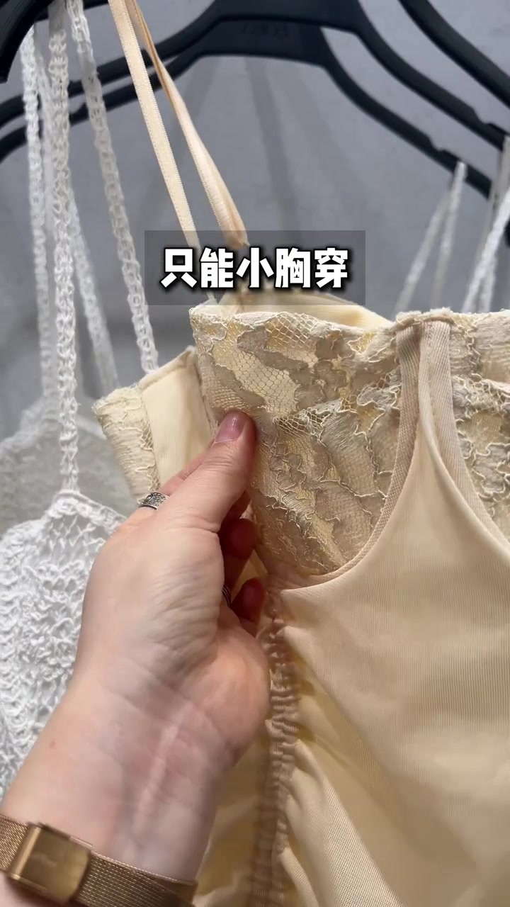
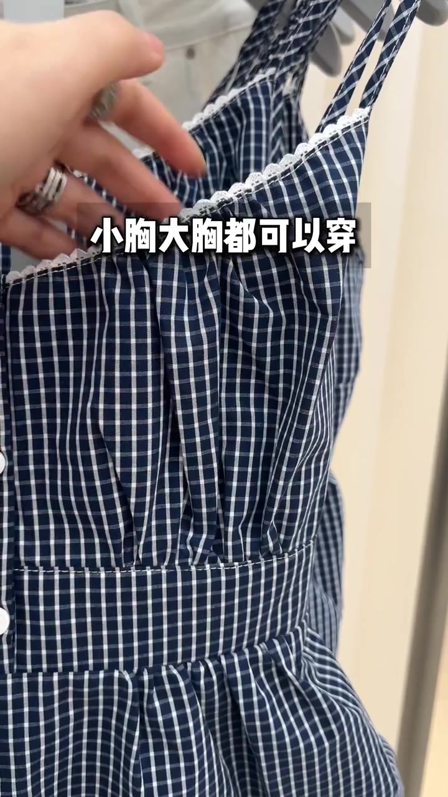
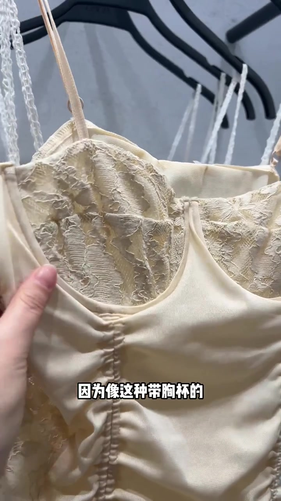
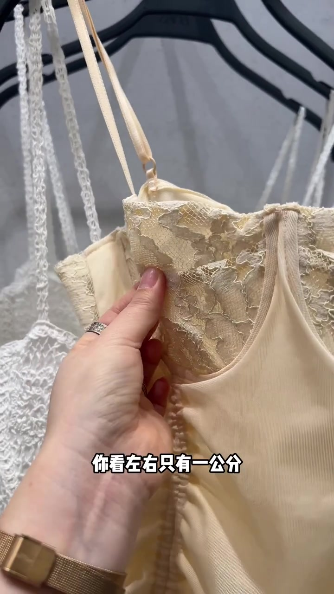
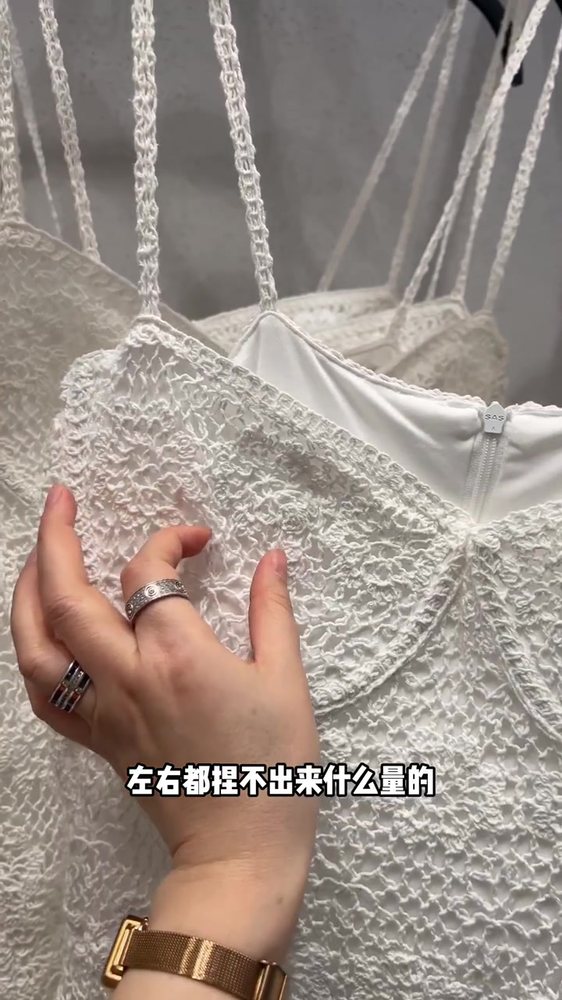
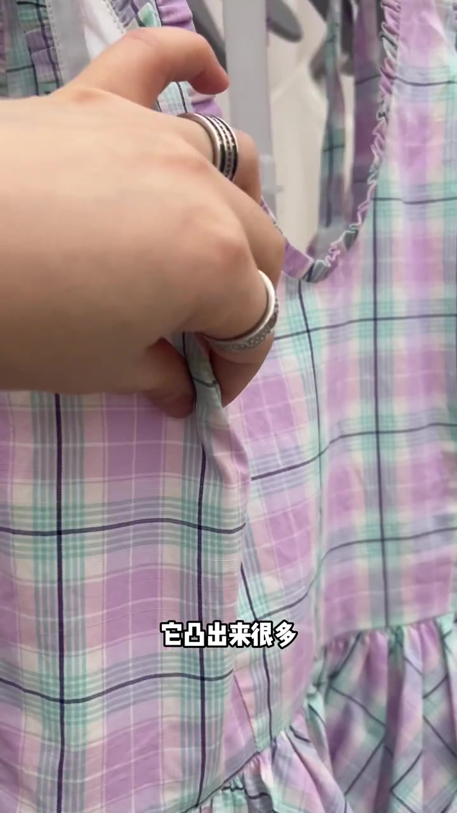
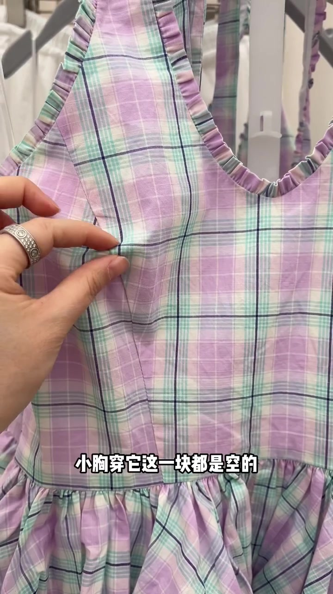
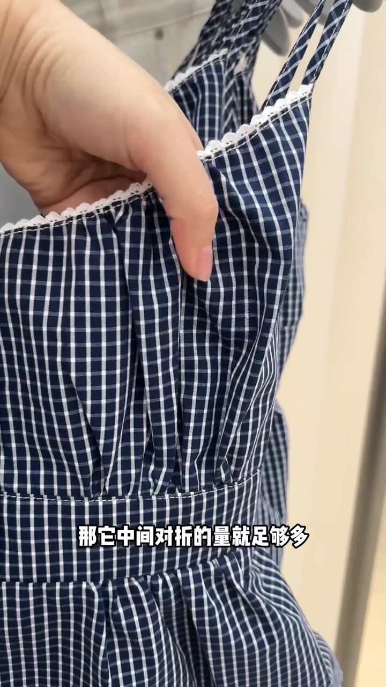

00:00–00:05
开场：三件样衣，先贴好“谁能穿”
视频一上来就用三条叠字定调：只能小胸穿、只能大胸穿、小胸大胸都可以穿。随后镜头在货架上的吊带、格纹裙与蓝白格子裙之间切换，几乎没有铺垫闲聊。
这不是穿搭灵感合集，而是店内快筛：先认衣服的胸围“包容性”，再决定要不要试、适不适合自己的杯型。
可见字幕校正：Whisper 把「带胸杯／什么量的／胸上围／小碎褶／对折／小起褶／再饱满点」听成音近字。下文按画面字幕与服装结构叙述，文末转录区仍保留原始分段。

[00:01] 开场标签一：米色蕾丝胸杯吊带，叠字“只能小胸穿”。
Opening label one: beige lace-cup camisole, overlay “only for small busts.”

[00:03] 开场标签三：蓝白格子碎褶裙预告“小胸大胸都可以穿”。
Opening label three: a blue-white checked gathered skirt previewing “fits both small and big busts.”
00:05–00:17
小胸限定：带胸杯、包容性小
回到那件米色蕾丝吊带，主讲人明确说它只适合小胸、平胸。原因写在字幕上：像这种带胸杯的，包容性比较小。
镜头推到胸侧，她用手指掐住左右余量，让观众看见“对折量”到底有多少——不是凭感觉说紧，而是把布料折起来量。

[00:07] 结构点名：带胸杯的吊带，字幕写“因为像这种带胸杯的”。
Structure callout: a strappy top with built-in cups, subtitle “because with this kind of built-in cups.”
00:09–00:20
手掐实测：左右只有一公分对折量
掐量动作很短，结论很硬：左右只有一公分对折量，就只能是 A 杯或者小 B 杯；再饱满一点就穿不了。画面里 ZARA 衣架吊牌一闪而过，但论证不依赖品牌，只依赖这个“一公分”。
紧接着换到另一件白色重工蕾丝：左右都捏不出来什么量，字幕与口播一致，只能 A 杯穿。两件反例把“小胸限定”钉死——不是审美偏好，是余量不够。

[00:10] 手掐实测：叠字“你看左右只有一公分”，对应 A / 小 B 的边界。
Finger-pinch test: overlay “see, only one centimeter between left and right” — marking the A / small-B boundary.

[00:18] 第二件小胸限定：白色蕾丝，叠字“左右都捏不出来什么量的”。
Second small-bust exclusive: white lace, overlay “neither side can pinch out any volume.”
00:20–00:34
大胸限定：侧面鼓起多、对折量充足
镜头切到紫绿格纹吊带裙。主讲人说胸大一点、B 以上去选这种；侧面一看就凸出来很多，左右对折量很充足。大胸穿既美观又舒适——这是作者立场，画面用鼓起的侧缝与手捏余量做证据。
反过来：小胸穿它“这一块都是空的”。大胸友好款不是通用款，空荡的胸围会直接毁掉版型。

[00:25] 大胸线索：侧面凸出，叠字“它凸出来很多”。
Big-bust clue: it protrudes from the side, overlay “it bulges out a lot.”

[00:33] 适用边界：叠字“小胸穿它这一块都是空的”。
Applicability boundary: overlay “on a small bust, this area hangs empty.”
00:34–00:47
通用款：胸上围小碎褶，中间对折量够多
最后落回蓝白格子裙。主讲人解释大小胸都可以穿：因为胸上围捏了小碎褶，胸下围也是，中间对折的量就足够多。
小胸穿时，这一块整体小起褶，能“小胸显大”；大胸则把中间折量全部顶开，同样美观舒适。同一件衣服，靠可展开的褶量同时服务两种杯型——这是整条视频的收束动作。

[00:40] 通用结构：展开中间对折量，叠字“那它中间对折的量就足够多”。
The common structure: unfold the center fold allowance, overlay “then its center fold allowance is plenty.”